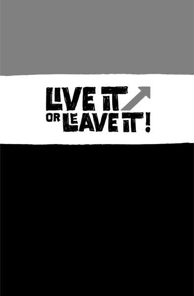

{% include JB/setup %}
{% raw %}
<div>

<h2 id="filepos54701" class="calibre19"><span class="calibre2"><a class="calibre13"></a><strong class="calibre14">Draw a line in the sand</strong></span></h2><div class="calibre4"></div>
<p class="calibre7">As you get going, keep in mind <em class="italic1">why</em> you're doing what you're doing. Great businesses have a point of view, not just a product or service. You have to believe in something. You need to have a backbone. You need to know what you're willing to fight for. And then you need to show the world.</p>
<p class="calibre17">A strong stand is how you attract superfans. They point to you and defend you. And they spread the word further, wider, and more passionately than any advertising could.</p>
<p class="calibre17">Strong opinions aren't free. You'll turn some people off. They'll accuse you of being arrogant and aloof. That's life. For everyone who loves you, there will be others who hate you. If no one's upset by what you're saying, you're probably not pushing hard enough. (And you're probably boring, too.)</p>
<p class="calibre17">Lots of people hate us because our products do less than the competition's. They're insulted when we refuse to include their pet feature. But we're just as proud of what our products don't do as we are of what they do.</p>
<p class="calibre17">We design them to be simple because we believe most software is too complex: too many features, too many buttons, too much confusion. So we build software that's the opposite of that. If what we make isn't right for everyone, <a class="calibre16"></a>that's OK. We're willing to lose some customers if it means that others love our products intensely. That's our line in the sand.</p>
<p class="calibre17">When you don't know what you believe, everything becomes an argument. Everything is debatable. But when you stand for something, decisions are obvious.</p>
<p class="calibre17">For example, Whole Foods stands for selling the highest quality natural and organic products available. They don't waste time deciding over and over again what's appropriate. No one asks, "Should we sell this product that has artificial flavors?" There's no debate. The answer is clear. That's why you can't buy a Coke or a Snickers there.</p>
<p class="calibre17">This belief means the food is more expensive at Whole Foods. Some haters even call it Whole Paycheck and make fun of those who shop there. But so what? Whole Foods is doing pretty damn well.</p>
<p class="calibre17">Another example is Vinnie's Sub Shop, just down the street from our office in Chicago. They put this homemade basil oil on subs that's just perfect. You better show up on time, though. Ask when they close and the woman behind the counter will respond, "We close when the bread runs out."</p>
<p class="calibre17">Really? "Yeah. We get our bread from the bakery down the street early in the morning, when it's the freshest. Once we run out (usually around two or three <a class="calibre16"></a>p.m.), we close up shop. We could get more bread later in the day, but it's not as good as the fresh-baked bread in the morning. There's no point in selling a few more sandwiches if the bread isn't good. A few bucks isn't going to make up for selling food we can't be proud of."</p>
<p class="calibre17">Wouldn't you rather eat at a place like that instead of some generic sandwich chain?</p>
<p class="calibre3"><a class="calibre16"></a></p><div class="calibre4"></div>
</div>

{% endraw %}

